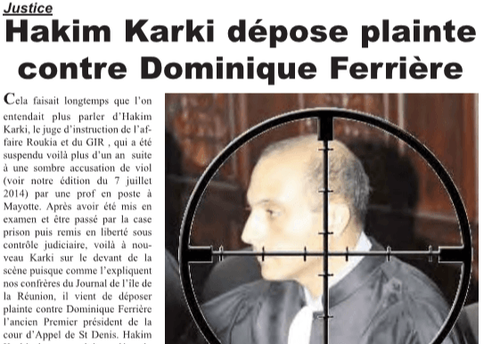
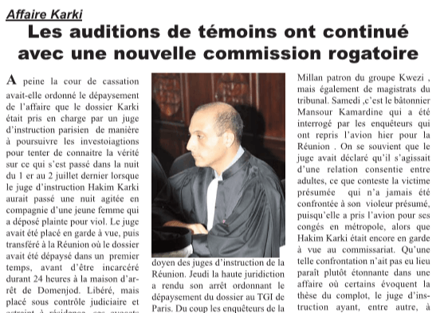
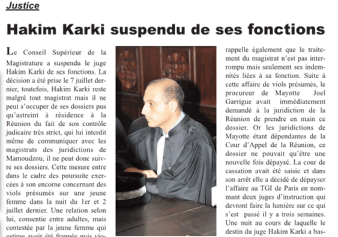
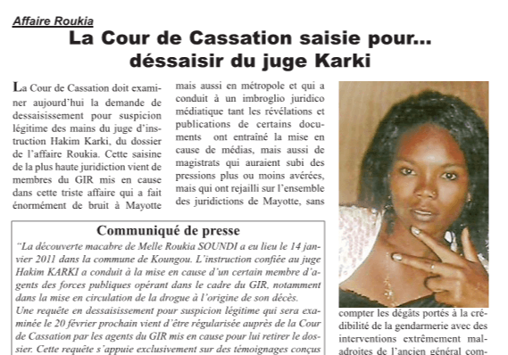
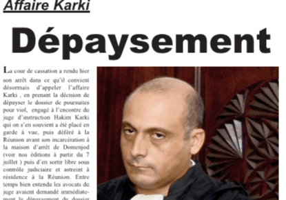
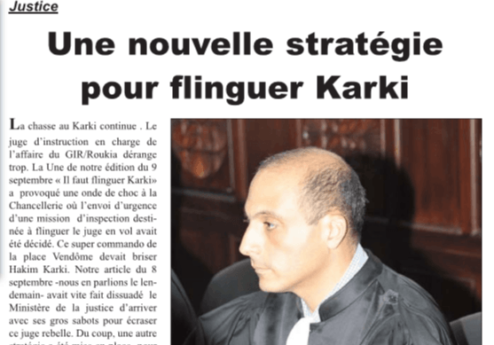

Archives de presse
Revue de presse concernant les articles parus dans le quotidien "Les Nouvelles de Mayottes"
-

Hakim Karki dépose plainte contre Dominique Ferrière
Cela faisait longtemps que l'on entendait plus parler d'Hakim Karki. le juge d'instruction de l'affaire Roukia et du GIR, qui a été suspendu voilà plus d'un an à une sombre accusation de viol (voir notre édition du 7 juillet 2014)...
-

Les auditions de témoins ont continué avec une nouvelle commission rogatoire
(Article paru le 21 juillet 2014) À peine la cour de cassation avait-elle ordonné le dépaysement de l'affaire que le dossier Karki...
-

Juge Karki suspendu de ses fonctions
(Article paru le 24/01/2014) Le conseil Supérieur de la Magistratue a suspendu le juge Hakim Karki des ses fonctions...
-

La Cour de Cassation saisie pour...dessaisir le juge Karki
(Article paru le 20/02/2013) La cour de Cassation doit examiner aujourd'hui la demande de dessisissement pour suspicion légitime des mains du juge d'inscruction Hakim Karki, du dossier de l'affaire Roukia...
-

Dépaysement
(Article paru le 18/07/2014) La cour de cassation a rendu hier son arrêt dans ce qu'il convient désormais d'appeler l'affaire Karki...
-

Une nouvelle stratégie pour flinguer Karki
(Article paru le 18/04/13 ) La chasse au Karki continu. Le juge d'instruction en charge de l'affaire du GIR/Roukia dérange trop...